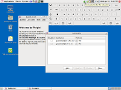
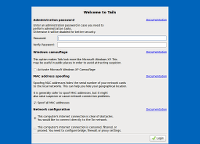

Tails reaches 1.0
Version 1.0 of the privacy-centric Tails distribution was released on April 29. As the release announcement notes, the 1.0 release is an important milestone, but in the case of Tails, this milestone primarily designates the distribution's stability and increased adoption, rather than a significant new set of features (although the project has unveiled a nice new logo with the release, too). Tails 1.0 continues to offer the lean, anonymous, and secure Internet-access experience of previous releases (we last took a look at the project in 2011), while fixing a fresh set of security vulnerabilities.
The 1.0 release is based on Debian "squeeze" with a select set of package updates backported from Debian unstable—including newer releases of the kernel and Tor. It is available for download via HTTP and BitTorrent.
Tails started out under the name "Amnesia" because, in addition to providing security-hardened applications, one of its key goals was to provide an environment that does not leave any persistent traces of activity between one session and the next. The current name still reflects this concern: "Tails" is an acronym for "The amnesic incognito live system."
The distribution is designed to be run from removable media—preferably read-only media—which is a common feature among "live" distributions. But Tails goes further than most; in addition to not using persistent storage on the boot media (in the case of read-write media like USB stick or flash memory cards), Tails is configured to not use any swap space on the hard disks of the computer it is running on, and it erases the contents of the RAM it used when it shuts down.
All Internet applications included in Tails come pre-configured to use Tor, which helps provide anonymity and deters eavesdropping. In addition, Tails comes with a Tor configuration that isolates applications to different Tor circuits, which guards against attackers correlating the applications as having originated from the same system. The Tor project calls this option stream isolation; the gist is that a different Tor circuit is built for each application, with different entry and exit nodes, making it significantly harder for any attacker to observe multiple circuits and discover that they come from the same computer. The Tails documentation notes that it hopes to offer even finer-grained isolation in future releases, such as isolating each browser tab from the others.

Speaking of the browser, Tails ships a version of Iceweasel (Debian's rebranding of Firefox), with the patches from the Tor Browser Bundle applied and several security and anonymity extensions installed. In version 1.0, the browser is Iceweasel 24.5. All of the usual caveats about the limitations of Tor and unintentionally sacrificing one's anonymity (through logging in to online accounts or installing unsafe browser add-ons) still apply, of course, but the Tails documentation does a good job of explaining them. The other Internet applications provided include Claws Mail (with GnuPG support), Pidgin (with off-the-record messaging support), the collaborative text editor Gobby, and the I2P overlay-network tool.
In addition, there is a large collection of encryption and security utilities included, from common offerings like the KeePassX password manager to less-well-known programs like Shamir's Secret Sharing Scheme (SSSS). A plaintext "secret" can be fed into SSSS to be split into several encrypted chunks that can be distributed separately; the secret can then be unlocked only by re-combining the chunks. Finally, a set of common desktop applications is included (such as GIMP and Apache OpenOffice), so that Tails users can actually work with real documents.
In a nice move, the installed applications also include tools necessary for scanning and ripping audio CDs, not just file editors. Beyond the actual selection of applications, Tails also offers several nice touches that demonstrate the project's attention to detail. For example, it changes the MAC addresses reported for the system's network adapters, to guard against that information being used to identify the physical computer used. One of the functional changes in the 1.0 release is that Tails now does this MAC disguising by default. There is also a boot-time option to further obscure the nature of the system with a Windows camouflage mode that visually mimics a Windows XP desktop, and an onscreen virtual keyboard is provided to protect against hardware keylogging attacks.

Despite the fact that Tails is geared toward usage as a live distribution, the distribution can be configured to use persistent storage, and can be customized with additional applications. Clearly there is value to be found in these options, since the anonymity and security features do not strictly require amnesiac behavior. But a Tails image installed on flash storage can also be upgraded in place when there is a new release, without using persistent storage.
Tails gained a lot of press coverage in the past year when NSA whistleblower Edward Snowden was reported to have used the distribution—and, evidently, to have used it to successfully remain beyond the grasp of those people not fond of his whistleblowing. In part, the 1.0 release is an acknowledgment that Tails has reached prime time, even though it has been a reliable option for several years.
The 1.0 release announcement notes that Tails is by no means
finished with its development work. An update is scheduled for June
that will be built on Debian "wheezy" (thus refreshing a lot of
packages). The project is also hard at work on some other
initiatives, such as a way to sanitize the metadata stored in files
saved by Tails applications, using the Metadata anonymisation toolkit.
Further out, the project is planning to eventually release its own
same-day security updates and to sandbox critical applications. Creating
a secure and anonymous operating system, it seems, is work that will
never be done.
| Index entries for this article | |
|---|---|
| Security | Anonymity |
| Security | Distributions |
| Security | Privacy |